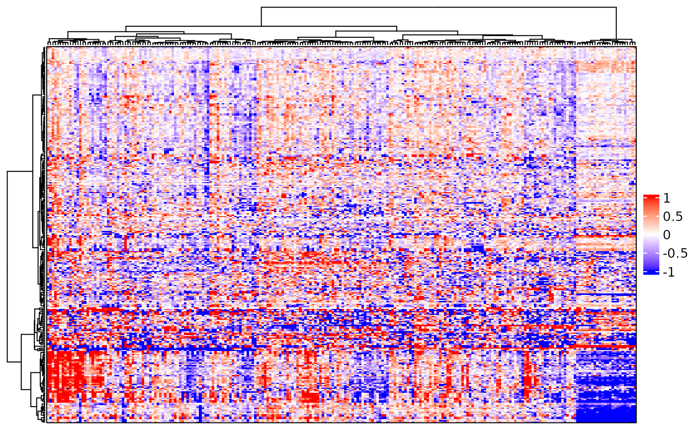
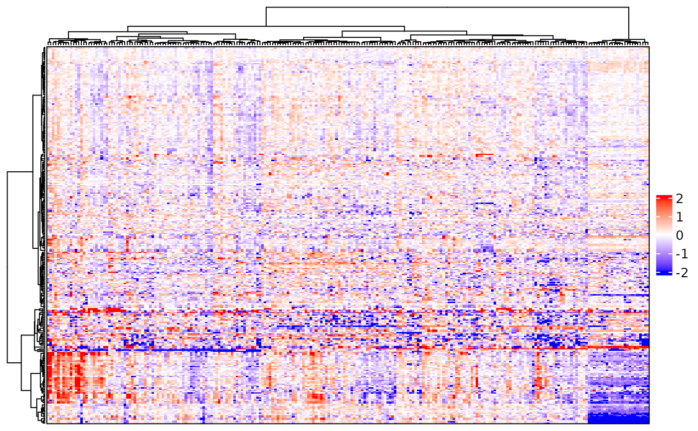
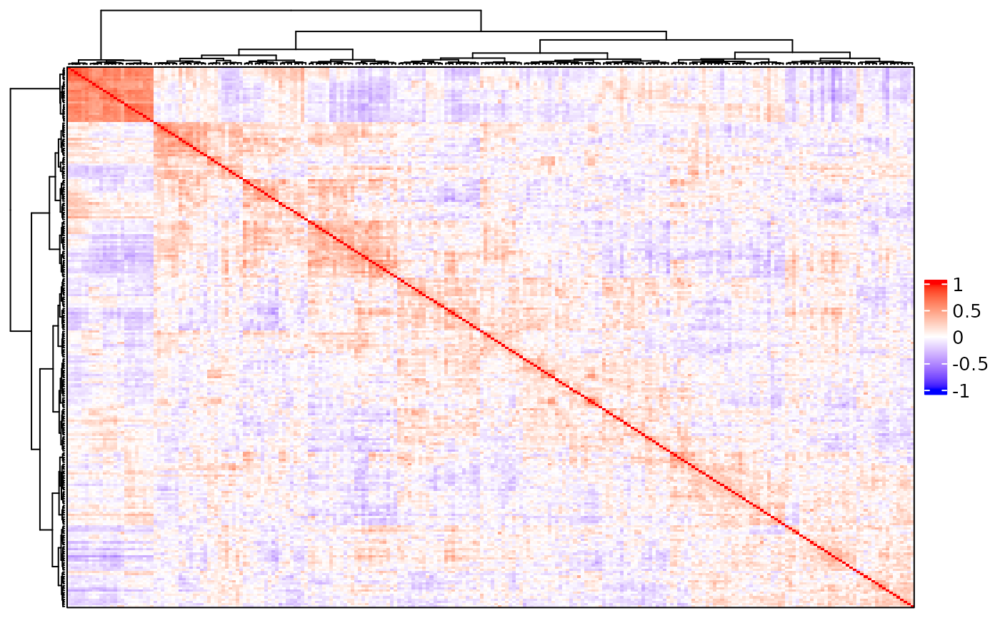
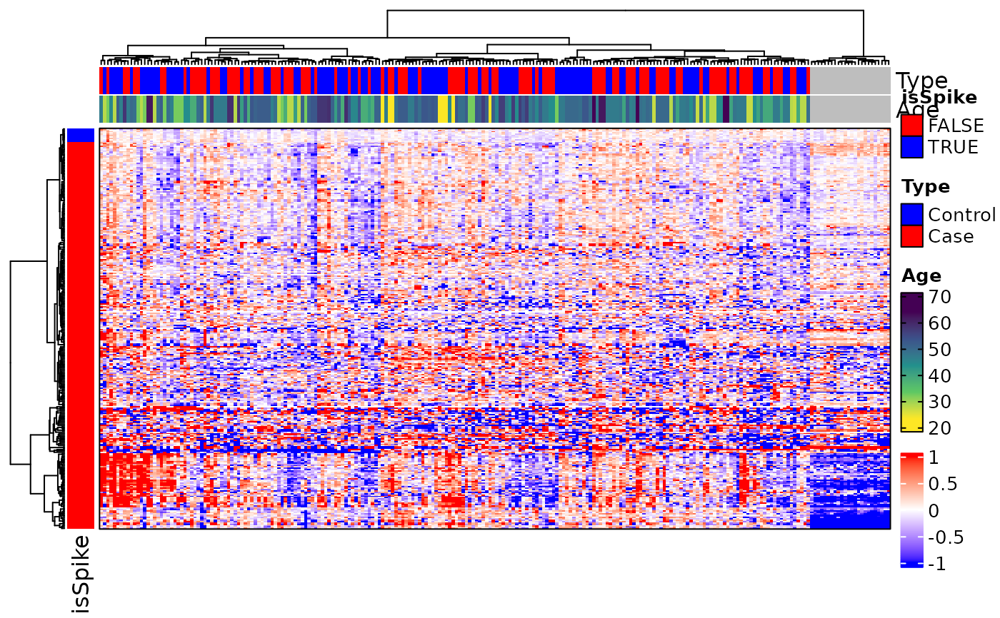

complex_heatmap.RdA wrapper around functions from
ComplexHeatmap-package. Creates expression or
correlation heatmaps from eSet or MSnSet objects.
complex_heatmap(
eset,
clustering_distance = c("euclidean", "maximum", "manhattan", "canberra", "binary",
"minkowski", "pearson", "spearman", "kendall"),
clustering_method = c("ward.D", "ward.D2", "single", "average", "complete", "mcquitty",
"median", "centroid"),
heatmap_type = "expression",
cor_method = c("pearson", "kendall", "spearman"),
cluster_columns = TRUE,
cluster_rows = TRUE,
show_column_dendrogram = TRUE,
show_row_dendrogram = TRUE,
show_column_names = FALSE,
show_row_names = FALSE,
heatmap_title = character(0),
heatmap_legend_title = NULL,
color_range = c(-1, 0, 1),
colors = c("blue", "white", "red"),
heatmap_args = list(),
anno_column = NULL,
anno_row = NULL,
anno_column_titles = anno_column,
anno_row_titles = anno_row,
anno_column_colors = list(),
anno_row_colors = list(),
anno_args = list(),
filename = NULL,
height = 5,
width = 5,
draw_args = list()
)an object of class eSet or
MSnSet-class.
character; the distance measure used to cluster
rows and columns. Passed to dist. One of
("euclidean", "maximum", "manhattan",
"canberra", "binary", "minkowski", "pearson",
"spearman", or "kendall"). Default is "euclidean".
character; the agglomeration method used to cluster
rows and columns. Passed to hclust. One of
("ward.D", "ward.D2", "single", "average",
"complete", "mcquitty", "median", or
"centroid"). Default is "ward.D".
character; the type of heatmap to generate. Must be (an
abbreviation of) either "expression", "sample_correlation",
or "feature_correlation". The default ("expression")
generates a heatmap with features as rows and samples as columns. The other
options calculate the sample or feature correlation matrix and generate a
heatmap with samples or features as both rows and columns.
character; the method used to generate the correlation
matrix if heatmap_type is a correlation heatmap. One of
("pearson", "kendall", or "spearman"). Defaults to
"pearson". Passed to cor.
logical; whether to cluster the columns.
logical; whether to cluster the rows.
logical; whether to show the column dendrogram. Does not affect clustering.
similar to show_column_dendrogram, but for
rows.
logical; whether to show the column names.
logical; whether to show the row names.
character; overall title for the heatmap.
character; title of the heatmap color legend.
numeric; vector of length 2 used to restrict the colors of the heatmap body. Useful when color differences are not easily discernible due to outliers.
list of arguments passed to
Heatmap.
character; one or more column names of pData(eset)
used to annotate the columns of the heatmap. By default, columns are not
annotated.
character; one or more column names of fData(eset)
used to annotate the rows of the heatmap. By default, rows are not
annotated.
character; names for the column annotations, if
different from anno_column. Must be the same length as
anno_column.
similar to anno_column_titles, but for row
annotations.
list of custom colors for column annotations
specified by anno_column. List names must match one or more names in
anno_column. If modifying the colors of a continuous column
annotation, always use colorRamp2 with desired
breaks and colors. Otherwise, pass a vector of unique colors (order
matters).
same as anno_column_colors, but for
anno_row.
list of arguments passed to
HeatmapAnnotation.
character; file name used to save the heatmap. Must end in (".png", ".bmp", ".jpg", ".tif", or ".pdf").
numeric; height of heatmap in inches. Default is 5.
numeric; width of heatmap in inches. Default is 5.
list of arguments passed to
draw-HeatmapList-method. Unlikely to be used
often.
An object of class HeatmapList-class or
nothing (save to file instead).
If the hclust error NA/NaN/Inf in foreign function call occurs, it
means there are cases where two or more features are not present in the
same samples, so their distances will be NA, and it is impossible to
perform hierarchical clustering. If this happens, filter to features
present in more than 50% of samples with m[rowMeans(!is.na(m)) > 0.5, ],
where m is the MSnSet.
Gu, Z., Eils, R., & Schlesner, M. (2016). Complex heatmaps reveal patterns and correlations in multidimensional genomic data. Bioinformatics, 32(18), 2847-2849. https://doi.org/10.1093/bioinformatics/btw313
Gu, Z., Gu, L., Eils, R., Schlesner, M., & Brors, B. (2014). Circlize implements and enhances circular visualization in R. Bioinformatics, 30(19), 2811-2812. https://doi.org/10.1093/bioinformatics/btu393
# library(MSnSet.utils)
data(longitudinal_biomarker_study) # MSnSet
ee <- longitudinal_biomarker_study
# Missingness filter - clustering may fail otherwise
ee <- ee[rowMeans(!is.na(exprs(ee))) >= 0.5, ]
# Expression heatmap
complex_heatmap(ee)

# Limit color range to see differences more easily
complex_heatmap(ee, color_range = c(-2, 0, 2))

# Sample correlation heatmap
complex_heatmap(ee, heatmap_type = "s")

# Annotate columns by "Type" (categorical) and "Age" (continuous)
# Annotate rows by "isSpike" (logical)
complex_heatmap(ee, anno_column = c("Type", "Age"),
anno_row = "isSpike")
